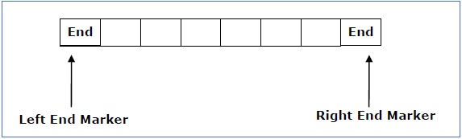

Theory of Computation
Home
Linear Bound Automata
A linear bounded automaton is a multi-track non-deterministic Turing machine with a tape of some bounded finite length.
Linear Bound automata can be define as :
- Q is a finite set of states
- X is the tape alphabet
- ∑ is the input alphabet
- q0 is the initial state
- ML is the left end marker
- MR is the right end marker where MR ≠ ML
- δ is a transition function which maps each pair (state, tape symbol) to (state, tape symbol, Constant ‘c’) where c can be 0 or +1 or -1
- F is the set of final states
Linear Bound Automata Diagram
